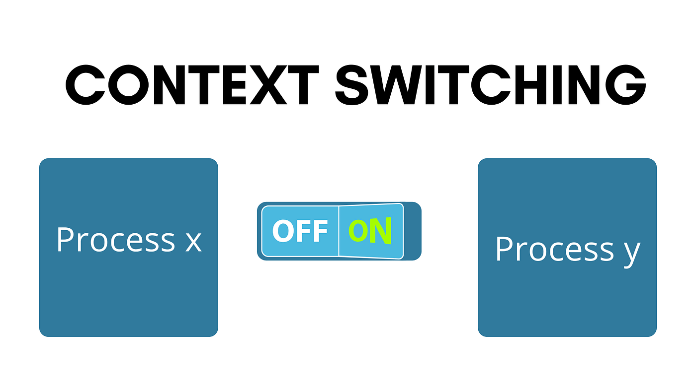

Feb 6, 2021
The app context switching cost

The app context switching is not benefiting the smartphone users. In desktop, This app context switching that I should call software context switching is better because it is faster and allows easy callbacks that make the user go into something she used some hour or minutes or second ago using history or windows panels.
In desktop if you don’t work in specialized domain specific software almost everything happen in browser now. I used to manage servers from this kind of software but now I can do all of this in my browser with all my servers hosted in cloud hosting services like google cloud, Microsoft azure or Amazon and why not digital ocean, heroku or even python everywhere.
In browser history is there already. you can remember this webpage you visits years ago but what about this app you opened just before you came and read this article. You need certainly another app to know it. In desktop you even have logs files.
In operating systems and software engineering context switching is a core thing to improve. Switching from processor memory to random memory, switching from process to process in multhreaded programs, switching from user space to kernel space like with your game engine
And my mind just fired the fact that when I write here your game engine a search engine can believe that this is for game developers, designers, the whole game industry and now when I say Industry, consumers are part of what I call industry and this is a decision I just took at this moment and hope I will see how it will make better both my point of view and the impact I seek to make. I always cared about the well being of consumers because I agreed that I am just a simple one and guess you also.
all these Is above remember me this talkshow about how the selfish act of saying always me and I creadted bad marketers. So just trying hard to say me and I but rather you or we.
Apologies
Here is an idea for you:
Toilstoiy the talkstock platform